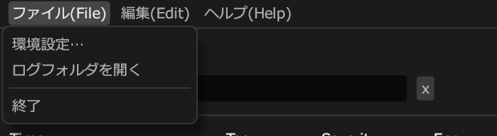

マニュアル
Veltrea Syslog Server（パッケージ名 vlt-syslogd）は、
syslog を受信して表示するソフトです。バージョン v0.4.0 に対応します。
1. どれを入れるか
使い方が 3 通りあります。まず自分がどれをやりたいのかを選んでください。 迷ったら Portable です。サービス登録も管理者権限も要らず、 起動すればすぐ動きます。
| やりたいこと | 入れるもの | 読む節 |
|---|---|---|
| とにかく試したい / 1 台で完結させたい | Portable だけ（インストール不要） | 2 → 3 |
| 常時 syslog を受け続けたい（サーバ用途） | Server（常駐）＋ Console（見る画面） | 4 → 5 → 6 → 7 → 8 |
| すでに動いている Server を別の画面から見たい | Console だけ | 7 |
三つの部品
| 呼び名 | 実行ファイル | 役割 |
|---|---|---|
| Portable | vlt-syslogd-portable |
自分で UDP を待ち受ける単体 GUI。サービス不要。 |
| Server | vlt-syslogd-srv |
画面を持たない常駐エンジン。UDP で受信し、Console へ配信する。 |
| Console | vlt-syslogd-console |
Server に TCP で接続して表示・操作する GUI。 |
Windows ではいずれも .exe が付きます。実行ファイルは
GitHub Releases
から入手してください。ソースからビルドする場合は
BUILD.ja.md
を参照してください（ビルド後の手順は配布バイナリと同じです）。
2. Portable をすぐ試す
Portable は単体で UDP 514 を待ち受ける GUI です。 展開して起動し、テスト送信して行が増えれば成功です。
2.1 Windows
vlt-syslogd-portable-windows-v0.4.0.zip を展開し、
vlt-syslogd-portable.exe をダブルクリックします。
SmartScreen の警告が出たら「詳細情報」→「実行」を選んでください。
Windows には特権ポートの概念が無いので、514 の待ち受けに管理者権限は要りません。
$u = New-Object System.Net.Sockets.UdpClient
$b = [Text.Encoding]::UTF8.GetBytes('<132>auth: 認証に失敗しました')
$u.Send($b, $b.Length, '127.0.0.1', 514) | Out-Null; $u.Close()2.2 macOS
vlt-syslogd-macos-portable-v0.4.0.dmg を開き、
vlt-syslogd-portable.app を取り出して起動します。
macOS 版は ad-hoc 署名（公証なし）のため、初回は Gatekeeper に止められます。
右クリック →「開く」を一度行うか、隔離属性を外してください。
xattr -dr com.apple.quarantine vlt-syslogd-portable.appPortable 版は隔離属性を必ず外してください
Portable 版はデータを .app の隣に置きます。
隔離属性が残っていると App Translocation によって
.app が読み取り専用の別の場所から起動され、
その置き場所が壊れます。
printf '<34>Oct 11 22:14:15 myhost myapp: hello' | nc -u -w1 127.0.0.1 5142.3 Linux
単一の ELF バイナリです。実行権限を付けて起動します。
514 は特権ポートなので、bind に失敗する場合は root で実行するか
CAP_NET_BIND_SERVICE を付与してください。
chmod +x vlt-syslogd-linux-x86_64-portable-v0.4.0
./vlt-syslogd-linux-x86_64-portable-v0.4.0
GUI の表示には CJK フォントが必要です。入っていないと日本語が
□（豆腐）になります。fonts-noto-cjk 等を入れてください。
3. 画面の見かた

3.1 5 つの列
| 列 | 中身 |
|---|---|
| Time | 受信した時刻（ミリ秒まで）。送信側が名乗った日時ではなく、 こちらが受け取った時刻です。 |
| Tag |
本文の先頭から取り出したタグ。<PRI>tag: 本文
のようにコロンの前に空白を含まない語があるときだけ埋まり、
それ以外は - になります。
|
| Severity | PRI から取り出した重大度。Emergency / Alert / Critical / Error / Warning / Notice / Informational / Debug の 8 段で、 色でも区別されます。 |
| Enc | この 1 通を復号するのに使った文字コードと、 そう決めた根拠。次の項で説明します。 |
| Message | 復号した本文。 |
Filter 欄に文字を入れると、本文とタグを対象に絞り込みます。 Auto-scroll を外すと最新行への追従が止まるので、 流れているログの中で 1 行を読みたいときに使ってください。 🗑 Clear は表示中の行を捨てます（保存済みのログファイルは消えません）。
行を右クリックすると Copy Message（復号後の本文）と Copy as Hex（届いた生のバイト列）を取り出せます。 表示がおかしいと思ったときは Hex を見れば、 送信側とこちらのどちらの問題かが切り分けられます。
3.2 Enc 欄の読み方
文字コードの判定は通信全体ではなく 1 通ごとに行います。 同じポートに Shift_JIS の機器と UTF-8 の機器が混ざっていても構いません。
| Enc の表示 | 意味 |
|---|---|
UTF-8 / Shift_JIS |
RFC 3164 形式などで届いたものを、バイト列から判定して復号した。 |
Shift_JIS (MSG-SD/BOM-Missing) |
RFC 5424 の構造化データが
charset="Shift_JIS" と宣言していたので、
それに従った。BOM は付いていなかった。
|
UTF-8 (MSG-UTF8/BOM) |
宣言は無かったが BOM があったので UTF-8 として読んだ。 |
UTF-8 (Implicit) |
宣言も BOM も無く、UTF-8 として妥当だったのでそう解釈した。 |
Shift_JIS (Guess) |
手掛かりが無く、バイト列から推定した。ここだけは推測です。 |
system |
受信したものではなく、vlt-syslogd 自身が出した行 （待ち受けの成否など）。 |
3.3 環境設定


起動時の bind の成否は、ログ一覧の 1 行目にそのまま出ます
（Listening on 0.0.0.0:514 (UDP)）。
514 が他のプロセスに使われていて失敗した場合は、
ここで 1024 番以上のポートに変えてください。送信側も同じポートに合わせます。
GUI 版の待ち受けアドレスは、環境変数
VLT_SYSLOGD_BIND でも上書きできます
（例: VLT_SYSLOGD_BIND=0.0.0.0:5514）。
4. Server を常駐させる
Server は画面を持たない常駐プログラムです。 同梱のインストールスクリプトが「実行ファイル配置 → データフォルダ作成 → サービス登録 → 起動」までを行います。管理者権限が要るのは インストール時の 1 回だけで、以後は OS の起動時に自動で立ち上がります。
4.1 Windows サービス
管理者として実行した PowerShell から:
cd Server
powershell -ExecutionPolicy Bypass -File .\install-windows.ps1| 実行ファイル | C:\Program Files\vlt-syslogd\vlt-syslogd-srv.exe |
| データ / ログ | C:\ProgramData\vlt-syslogd\ |
| サービス名 | vlt-syslogd-srv（スタートアップ種別: 自動） |
| 状態確認 | sc.exe query vlt-syslogd-srv |
PowerShell スクリプトは CP932 での文字化けを避けるため、 意図的に ASCII のみで書かれています。日本語の説明はこのページにあります。
4.2 macOS / launchd
cd Server
sudo ./install-macos.sh| 実行ファイル | /usr/local/bin/vlt-syslogd-srv |
| データ / ログ | /usr/local/var/vlt-syslogd/ |
| LaunchDaemon |
/Library/LaunchDaemons/com.veltrea.vlt-syslogd-srv.plist
|
| 状態確認 |
sudo launchctl print system/com.veltrea.vlt-syslogd-srv
|
LaunchDaemon は root で動くため、514 を bind できます。 インストール時に管理者認証を求められるのはこのためです。
4.3 Linux / systemd
cd Server
sudo ./install-linux.sh| 実行ファイル | /usr/local/bin/vlt-syslogd-srv |
| データ / ログ | /var/lib/vlt-syslogd/ |
| ユニット | /etc/systemd/system/vlt-syslogd-srv.service |
| 状態確認 | systemctl status vlt-syslogd-srv.service |
| ログ確認 | journalctl -u vlt-syslogd-srv.service -f |
514 を開くため、ユニットは既定で root で動きます。
非 root で動かしたい場合は、ユニットファイル内に専用ユーザー ＋
AmbientCapabilities=CAP_NET_BIND_SERVICE
のコメントヒントがあります。
5. 設定ファイル
Server は初回起動時にデータフォルダへ
config.toml を自動生成します。
既定のままで動くので、ポートやネットワークを変えたいときだけ触ってください。
[server]
bind_addr = "0.0.0.0:514" # syslog 受信 (UDP)
stream_addr = "127.0.0.1:5141" # Console への配信 (TCP)
control_addr = "127.0.0.1:5142" # 制御チャネル (TCP)
[logging]
level = "info"
max_size_mb = 10
keep_files = 7
変更したらサービスを再起動するか、Console の
サーバへ適用(再起動) を使ってください。
データフォルダの場所は環境変数 VLT_SYSLOGD_DATA_DIR
で上書きできます（テスト用）。
6. ネットワークとファイアウォール
3 つのポートは意図的に公開範囲を変えてあります。
| ポート | 既定 bind | 届く範囲 |
|---|---|---|
| 514/udp（受信） | 0.0.0.0 |
任意のホスト。リモート機器が syslog を送れる。 |
| 5141/tcp（配信） | 127.0.0.1 |
同一ホストのみ。 |
| 5142/tcp（制御） | 127.0.0.1 |
同一ホストのみ。 |
配信と制御のチャネルは、どちらも共有トークン
（<データフォルダ>/control.token、
インストーラが管理ユーザー所有・0600 で生成）で保護されています。
同一マシンの Console はそのまま接続でき、他の非特権ユーザーは接続できません。
別マシンから Console を繋ぐ
SSH トンネル経由を推奨します。直接到達できるアドレスに変更する場合は、
Server 側で環境変数 VLT_SYSLOGD_ALLOW_NONLOOPBACK
を設定する必要があります（設定しない限り、非ループバックの
stream_addr / control_addr は拒否されます）。
そのうえで Console の環境設定「制御トークン」に、
サーバの control.token の値を貼り付けてください。
ファイアウォール
Windows（管理者 PowerShell）:
New-NetFirewallRule -DisplayName "vlt-syslogd 514/udp" -Direction Inbound -Protocol UDP -LocalPort 514 -Action Allow
macOS のアプリケーションファイアウォールはポートではなくアプリ単位で
フィルタします。プロンプトで vlt-syslogd-srv
の着信接続を許可するか、システム設定 → ネットワーク → ファイアウォール →
オプションから追加してください。
「サービス稼働中」は「ポート到達可能」ではありません
サービスが動いていることと、ポートに届くことは別問題です。
リモート機器のログが来ないときの原因は、ほとんどがファイアウォールか
bind_addr です。
7. Console を使う

Console はサービスにする必要はありません。実行ファイルを開くだけです。 初回起動後、⚙ 設定 を開いて接続先が Server と一致しているか確認します。
- 配信アドレス → Server の
stream_addr（既定127.0.0.1:5141） - 制御アドレス → Server の
control_addr（既定127.0.0.1:5142）

画面上部の ● 受信中 が緑なら配信チャネルが繋がっています。 サービス操作 の開始 / 停止 / 再起動は、Server が同梱の インストーラでサービス登録されているときに動作します。
- Windows では UAC、macOS では パスワード / Touch ID のダイアログが出ます。承認すると続行します。
- サービス未登録のときは、操作は分かりやすいメッセージで即座に失敗します。 設定の保存自体は成功し、再起動だけがスキップされます。
8. 動作確認
-
サービスが稼働しているか（プロセスの有無ではなく、サービスとして）:
sc.exe query vlt-syslogd-srv # Windows sudo launchctl print system/com.veltrea.vlt-syslogd-srv # macOS systemctl status vlt-syslogd-srv.service # Linux -
待ち受けているか:
Get-NetUDPEndpoint -LocalPort 514 # Windows lsof -nP -iUDP:514 # macOS / Linux -
ローカルから 1 通投げて、Console に出るか:
printf '<34>Oct 11 22:14:15 myhost myapp: hello' | nc -u -w1 127.0.0.1 514状態インジケータが緑（● 受信中）になり、表に行が増えれば OK です。
-
リモート機器から送る場合のみ — ネットワーク上の別ホストから 届くかを確かめます。届かないときは
bind_addr、ファイアウォール、送信側の宛先 IP の順に確認してください。
9. アンインストール
cd Server; powershell -ExecutionPolicy Bypass -File .\uninstall-windows.ps1 # Windows（管理者）
cd Server && sudo ./uninstall-macos.sh # macOS
cd Server && sudo ./uninstall-linux.sh # Linuxサービスを停止・解除し、配置した実行ファイルを削除します。 設定とログはデータフォルダに残します。 完全に消したい場合はデータフォルダ（§11）を 手で削除してください。Portable はインストールしていないので、 ファイルを捨てるだけです。
10. 困ったとき
| 症状 | 原因と対処 |
|---|---|
| 日本語が □（豆腐）になる |
Linux で CJK フォントが入っていない。
fonts-noto-cjk 等を入れて起動し直す。
|
| アプリが開けない（macOS で「壊れている」） |
ad-hoc 署名の配布物に付く隔離属性。右クリック →「開く」、
または xattr -dr com.apple.quarantine <app>。
|
| 起動しても 1 通も来ない | 1 行目の bind の成否を確認する。失敗しているなら別のポートへ。 成功しているなら送信側の宛先とファイアウォールを確認する。 |
| Console が常に「○ 切断」 |
Server 未起動、または配信アドレス不一致。Server の稼働と、
Console の配信アドレス ＝ Server の
stream_addr を確認する。
|
| 設定の「現在値を取得」が失敗する |
制御アドレス不一致、または制御ポート未対応の古い Server。
control_addr を確認し、Server を入れ直す。
|
| インストールしたのに Console のサービス状態が「未インストール」 | サービス名 / launchd ラベルを独自に変えたときに起きる。 Console とインストーラが同じ識別子を指す必要がある（§11）。 |
| サービスは稼働中なのにリモート機器のログが来ない |
「稼働中」≠「到達可能」。(1) bind_addr が
127.0.0.1 でなく 0.0.0.0 / LAN IP か、
(2) ファイアウォールが UDP 514 を許可しているか、
(3) 送信側が Server の実 IP を向いているか。
|
| リモートの Console が接続できない |
stream_addr / control_addr
は既定でループバック限定。SSH トンネル経由を推奨。
直接公開するなら
VLT_SYSLOGD_ALLOW_NONLOOPBACK の設定と、
Console 側への制御トークンの貼り付けが必要。
|
| コンソール出力が文字化けする（Windows） | コンソールが CP932 のため。インストーラとサービスは ASCII のみで 書かれているので、動作には影響しない。 |
| インストールスクリプトが実行できない（Windows） |
管理者として PowerShell を開き、
-ExecutionPolicy Bypass を付けて実行しているか確認する。
|
11. 識別子とパスの一覧
| OS | サービス識別子 | データフォルダ |
|---|---|---|
| Windows | vlt-syslogd-srv |
C:\ProgramData\vlt-syslogd\ |
| macOS | com.veltrea.vlt-syslogd-srv |
/usr/local/var/vlt-syslogd/ |
| Linux | vlt-syslogd-srv.service |
/var/lib/vlt-syslogd/ |
環境変数
VLT_SYSLOGD_BIND |
GUI 版（Portable）の待ち受けアドレスを上書きする。 |
VLT_SYSLOGD_DATA_DIR |
Server のデータフォルダを上書きする。 |
VLT_SYSLOGD_CONSOLE_DATA_DIR |
Console 自身の設定の置き場所を上書きする。 |
VLT_SYSLOGD_ALLOW_NONLOOPBACK |
非ループバックの stream_addr /
control_addr を許可する。既定では拒否。
|